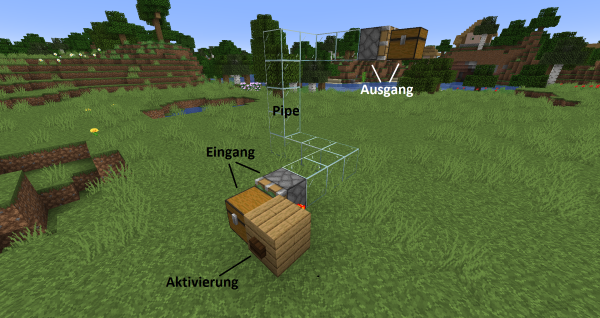
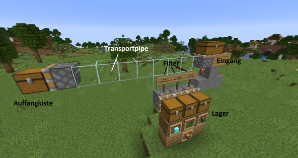
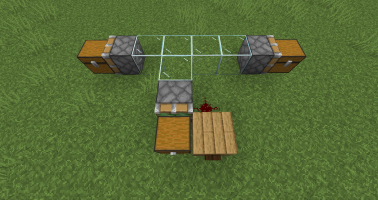
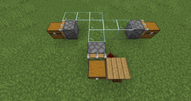
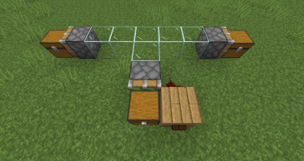
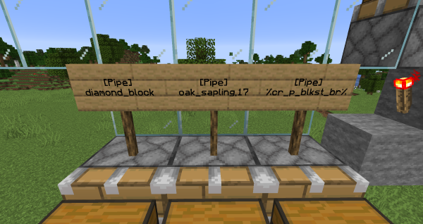
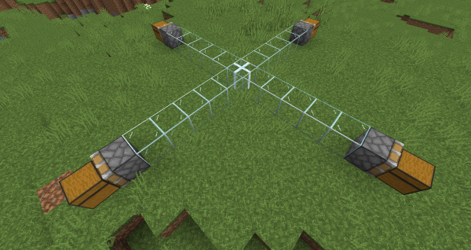
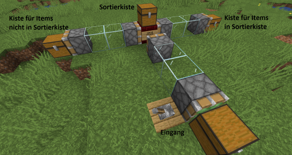
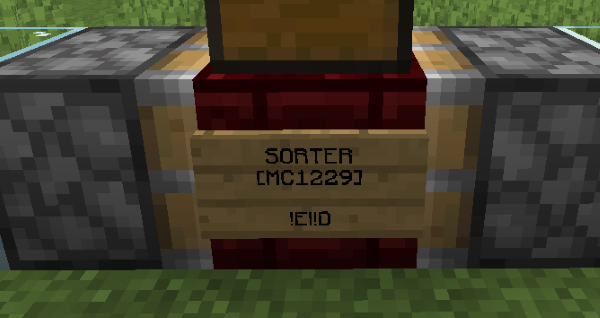

Pipes 💡 Feedback geben
✅ Ingame-Tutorial verfügbar: /warp tutorial_pipes
Pipes aus dem Plugin CraftBook sind ein mächtiges Transport- und Sortiersystem für Items. Die Vorteile gegenüber herkömmlichen Systemen mit Hoppern sind vielfältig:
- Der Transport erfolgt stackweise und blitzschnell. Innerhalb einer halben Minute kann eine ganze Kiste in ein Lager transportiert und korrekt einsortiert werden.
- Items können problemlos in jede Richtung transportiert werden.
- Ein Pipes-System verbraucht beim Bau weniger Ressourcen als ein Hopper-System.
- Mehrere Items können in eine gemeinsame Kiste sortiert werden.
- Es ist möglich, nicht stackbare Items wie verzauberte Bücher oder Rüstungen zu sortieren.
Wichtiger Hinweis zu Lags:
Wenn Pipes korrekt verwendet werden, sind sie wesentlich besser für die Serverperformance als Hoppersysteme. Die Beachtung der folgenden Hinweise ist aber wesentlich, um Lag zu vermeiden:
- Aktivierung des Pipe-Systems möglichst selten und nur bei Bedarf, zum Beispiel mit einer Komparator-Clock an der Eingangskiste (siehe unten)
- Insbesondere: Keine ständig laufenden Clocks an Pipes anschließen!
- Verwendung möglichst weniger Eingangskisten
- Keine Trichter in einem Pipesystem verwenden
- Möglichst kurze Pipes verwenden. Pipes, die in ungeladene Chunks gehen, sollen nur sehr selten und wenig verwendet werden.
Ein einfaches Transportsystem

Dieser Screenshot zeigt eine Pipe, die auf Knopfdruck einen Stack Items von der Kiste unten links in die Kiste oben rechts transportiert.
Der Eingang besteht aus einem klebrigen Kolben, der zur Eingangskiste hinzeigt. Sobald dieser per Redstone-Signal aktiviert wird, "saugt" er die Items aus der Kiste in die Pipe hinein. Als Eingang können auch andere Blöcke mit Inventar dienen wie, Fässer, Öfen, Trichter etc.
Die Pipe selbst besteht aus Glasblöcken. Sie kann in jede beliebige Richtung führen und sich sogar verzweigen (wie es bei Sortiersystemen oft nötig sein wird).
Der Ausgang ist ein normaler Kolben, der zur Ausgangskiste hinzeigt. Er gibt die Items aus der Pipe in die Kiste hinein. Ein Ausgangskolben könnte die Items aber auch zum Beispiel in eine Shulkerkiste, ein Fass, einen Ofen (wird automatisch in den richtigen Slot gesetzt), einen Spender (wird automatisch aktiviert!) oder einen Trichter weitergeben.
Eine Pipe sollte aber nicht in eine andere Pipe zeigen. Das bedeutet, dass kein normaler Kolben, der Items aus einer Pipe zieht, in eine andere Pipe (d. h. Glas) zeigen soll. Dies führt zu Systemen, die sich sehr inkonsistent verhalten und daher nicht einwandfrei funktionieren.
Der Transport eines Itemstacks dauert lediglich einen Tick (eine Zwanzigstelsekunde). Mit einem herkömmlichen Transportsystem würde dieser Transport fast eine halbe Minute brauchen.
Bitte beachten:
Auch ein normaler Kolben wird als Bestandteil einer Pipe gewertet. Dies bedeutet, dass Kolben sich, genau wie Glas, untereinander Items weitergeben können. Daher ist es empfehlenswert, dass jedem einzelnen normalen Kolben im System ein Filterschild zugewiesen ist.
Aktivierung des Eingangskolbens
Der klebrige Kolben kann auf folgende Arten aktiviert werden (siehe Screenshot):
- Eine Redstonefackel, ein Hebel oder ein Knopf direkt daneben, darüber oder darunter.
- Eine Redstoneleitung, die direkt neben dem Kolben verläuft.
- Ein Beobachter, der in den Kolben hineinzeigt.
Andere, sonst aus Minecraft gewohnte Methoden funktionieren unter Umständen nicht.

Hier abgebildet ist ein einfacher Aufbau, welcher die Items in drei verschiedene Kisten sortiert. Der klebrige Kolben wird hier mit einem Knopfdruck aktiviert.
Transportsysteme mit Verzweigungen
Sind mehrere Ausgangskisten an eine Pipe angeschlossen, so bevorzugt das System die Kisten, die näher an der Quelle liegen.



Verwendung von Filtern in einem einfachen Sortiersystem
Mit Schildern, die man auf Kolben stellt oder an ihnen befestigt, können Filter erstellt werden. In diesem Screenshot werden Filter dazu verwendet, um Diamantblöcke in die linke Kiste, Eichensetzlinge und Eichenstämme in die mittlere Kiste, und rissige polierte Schwarzsteinziegel in die rechte Kiste zu sortieren. Alle anderen Items landen in der Auffangkiste ganz links (siehe oberer Screenshot).

Aufbau des Filterschildes
- Zeile: Freilassen
- Zeile:
[Pipe] - Zeile: Items, die durchgelassen werden sollen, durch Kommas getrennt
- Zeile: Items, die nicht durchgelassen werden sollen, durch Kommas getrennt
Item-Variablen
Items können folgendermaßen benannt werden:
- Mit ihrer Minecraft-ID, zum Beispiel "diamond_block". Um die ID eines Items herauszufinden, kannst du das Minecraft-Wiki besuchen, oder die fortgeschrittenen Tooltips verwenden, die mit der Tastenkombination
[F3]+[H]aktiviert werden können. - Manche IDs sind zu lang für eine Zeile. Deswegen haben wir sogenannte Variablen definiert, die wie "Abkürzungen" funktionieren. Zum Beispiel steht
%cr_p_blkst_br%fürcracked_polished_blackstone_bricks. Auch noch kürzere Varianten sind vorhanden, z.B. bei diesem Beispiel%ex%.
Eine vollständige Liste der Variablen für einzelne Items findest du auf der Seite Pipe-Variablen.
Soll mehr als ein Item in eine Kiste sortiert werden, ist es möglich, an den zugehörigen Kolben die Variablen mit einem Komma zu trennen. Ist es beispielsweise gewollt Endstein und Endsteinziegel in eine Kiste zu sortieren, muss in der dritten Zeile 121,206 stehen (Achtung, keine Leerzeichen!). Diese beiden Variablen finden sich natürlich in der oben verlinkten Liste. Hierbei kann das Zeichenlimit von 15 Zeichen pro Zeile jedoch schnell ein Problem werden.
Hier kommen Sammelvariablen ins Spiel. Diese ermöglichen es, mehr Items, als auf ein Schild passen, mit einer einzelnen Variable über das Pipe-System zu sortieren. Wir haben viele vordefinierte Sammel-Variablen, die für die meisten Verwendungen ausreichen sollten, jedoch ist es nicht möglich, selbst eine derartige Sammel-Variable zu erstellen.
Eine vollständige Liste der Sammelvariablen findest du auf der Seite Pipe-Sammelvariablen.
Falls du Ideen für spezifische Sammelvariablen hast, die es noch nicht gibt, kannst du natürlich gerne Kontakt mit dem Serverteam aufnehmen.
Es ist möglich, alle Variablen und Sammelvariablen auch in Minecraft abzurufen. Folgende Befehle stehen dafür zur Verfügung:
/pipeid
Zeigt alle möglichen Variablen für ein Item im Chat an. Dazu muss das Item bei der Eingabe des Befehls in der Hand gehalten werden. Die Variablen können sowohl durch Anklicken in die Zwischenablage kopiert werden, als auch durch Klick auf “Schild erstellen” ein entsprechendes Schild erstellt werden. Zum Platzieren muss anschließend der Schildbearbeitungsmodus mit /sign aktiviert werden.
/pipeid <suchbegriff>
Zeigt die Variablen für ein spezifisches Item an, welches sich nicht im Inventar befinden muss. Es werden sowohl englische als auch deutsche Itemnamen akzeptiert. Achtung: Bei englischen Namen muss dieser in Form der “Minecraft-ID” eingeben werden. Beispielsweise führt “melon_slice” zu einem Ergebnis, aber “melon slice” nicht. Bei den deutschen Namen dürfen keine Unterstriche verwendet werden. Wenn sich das Fenster nach der Suche öffnet, einfach das gewünschte Item anklicken und die Variablen werden wie oben im Chat angezeigt.
/pipesign <item>
Erstellt direkt ein Schild mit der passenden Pipe-ID, welches im Schildbearbeitungsmodus (/sign) an einer Pipe platziert werden kann.
/sammelid
Zeigt alle möglichen Sammelvariablen in einem Menü an. Mit einem Linksklick kann die gewünschte Variable ausgewählt werden. Anschließend kann die Variable sowohl durch Anklicken in die Zwischenablage kopiert werden, als auch durch Klick auf “Schild erstellen” ein entsprechendes Schild erstellt werden. Zum Platzieren muss anschließend der Schildbearbeitungsmodus mit /sign aktiviert werden. Mit einem Rechtsklick können wiederum alle zugehörigen Items zu einer ID angesehen werden.
Items, die nicht einsortiert werden können
Wenn eine Pipe ein Item nirgends einsortieren kann (wegen voller Kisten oder weil es keine Kiste mit einem passenden Filter gibt), leitet sie das Item zurück an die Eingangskiste. Es besteht also keine Gefahr, dass Items verloren gehen. Vorsicht: Das funktioniert nur bei Pipes, die bei einer Kiste beginnen. Alle Pipes, die eine MC1229(auch MC1243)-Schaltung enthalten (siehe unten), werden die Items an der Schaltung in die Welt gedroppt und könnten unter Umständen despawnen.
Fortgeschrittene Techniken
Farbige Pipes
Indem gefärbtes Glas verwendet wird, können zwei verschiedene Pipes direkt nebeneinander gelegt werden. Items können aus einer farbigen Pipe nicht in eine andersfarbige Pipe wechseln (Zwischen farbigen und nicht gefärbten Pipes können Items dennoch frei hin- und herwechseln).
Kreuzungen mit Glasscheiben
Mit einer Glasscheibe kann man zwei Pipes überkreuzen, ohne sie miteinander zu verbinden. Items können über eine Glasscheiben-Kreuzung nur geradeaus wandern und nicht "abbiegen".

Sortierende Verzweigungen mit MC1229
Der sogenannte Integrated Circuit MC1229 kann als eine "sortierende Verzweigung" in einem Pipe-System verwendet werden und ist dabei mächtiger als klassische Filter.

Diese Schaltung besteht aus einem beliebigen Block, an dem ein Schild befestigt wird, in dessen zweiten Zeile [MC1229] geschrieben werden muss. An den Seiten dieses Blockes werden mit klebrigen Kolben zwei neue Pipes begonnen (diese beiden klebrigen Kolben werden durch die Schaltung automatisch aktiviert und brauchen kein eigenes Redstone-Signal). Auf den Block wird eine Kiste gestellt, in welche die Items gelegt werden, nach denen sortiert werden soll.
Wird im Screenshot die vordere Pipe aktiviert, gibt sie ihre Items mit einem normalen Kolben in das MC1229-Schild hinein und aktiviert damit das Sortiersystem. Alle Items, die auch in der Sortierkiste zu finden sind, werden nach rechts weitergeleitet, alle anderen Items nach links. Wird auf die dritte Zeile des Schildes "invert" geschrieben, werden die beiden Seiten getauscht: Items aus der Sortierkiste werden dann nach links, andere Items nach rechts geleitet.
MC1229 erlaubt es einem nicht nur, nach vielen Items gleichzeitig zu sortieren, sondern es werden auch viele Eigenschaften eines Items berücksichtigt. Bei Werkzeugen werden Haltbarkeit und Verzauberungen berücksichtigt, bei Zauberbüchern die genauen Verzauberungen. Auch Köpfe des Custom Heads Plugin können sortiert werden. Tränke können leider nicht mit dem MC1229 nach ihren Effekten sortiert werden. Dieser berücksichtigt bei der Sortierung nur, ob es sich um einen normalen Trank, Wurftrank oder Verweiltrank handelt.
Es ist möglich, sowohl Verzauberungen als auch Haltbarkeit der zu sortierenden Items zu ignorieren. Hierzu muss in die vierte Zeile des Schildes !E (ignoriert Verzauberungen) oder !D (ignoriert die Haltbarkeit) geschrieben werden. Diese beiden Erweiterungen können auch kombiniert werden, indem sie mit einem | ([ALT-GR] + [<>]) getrennt werden: !E|!D. In den meisten Fällen macht es Sinn, beide zusammen zu verwenden.

Falls es eintrifft, dass Items nicht einsortiert werden können, besteht bei der MC1229 die Möglichkeit, eine "Überfluss"-Kiste anzubinden. Items, welche sonst in die Welt gedropped werden sollten, landen dann in dieser Kiste. Diese muss gegenüber vom Schild so angebracht werden, wie es bei den Sortierseiten der Fall ist (Kolben, gefolgt von einer Truhe).
Verteilende Verzweigungen mit MC1243
Der sogenannte Integrated Circuit MC1243 kann als eine "verteilende Verzweigung" in einem Pipe-System verwendet werden und führt hiermit eine Mechanik ein, die sonst mit Pipes nicht möglich ist.
Diese Schaltung ist analog zum MC1229 aufzubauen (ohne Kiste), hat jedoch andere Beschriftungen auf dem Schild. Die erste Zeile bleibt leer und in die zweite Zeile muss [MC1243] geschrieben werden. In die dritte Zeile müssen zwei Zahlen mit einem Doppelpunkt getrennt geschrieben werden (X:Y), wie: 2:1. Die linke Zahl steht für die Anzahl an Stacks, die nach links geschickt werden sollen, die rechte Zahl für die Anzahl an Stacks, die nach rechts geschickt werden sollen. Es werden daher zuerst X Stacks an Items nach links, danach Y Stacks an Items nach rechts geschickt.
Leider kann der MC1243 ein Stack nicht unterteilen. Im Falle, dass 32:32 in die dritte Zeile geschrieben wird, werden 32 Stacks nach links, dann 32 Stacks nach rechts geschickt und nicht ein Stack in zwei 32er-Blöcke geteilt.
Jegliche Items, die in dieser Schaltung landen, werden nach den angegebenen Zahlen sortiert. Im Fall, dass in der dritten Zeile 1:2 steht, werden immer ein Stack nach links und zwei Stacks nach rechts geschickt. Die Schaltung unterscheidet dabei nicht zwischen verschiedenen Items.
Weitere Informationen zur MC1243 findest du in der offiziellen Dokumentation von Craftbook.
Nützliches
Clap-Befehl
VIP/VIS Feature
Mit dem /clap Befehl bist du in der Lage, Pistons, Werfer und Spender umgekehrt zu platzieren. Dazu musst du über den Befehl zu dem Modus schalten, sowie Schleichen, damit der Piston entgegengesetzt zu dir selbst platziert wird. Der Befehl ist eine Komfortfunktion und erhältlich unter den Vorteilen einzelner Ränge.